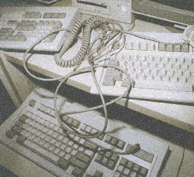

6. Technology
(four paragraphs)

CL: Co you think that life has gotten too predictable?
SLAYTON: Anything that has to do with technology is pretty damned predictable on the whole. Like the phone company, it's all there, you know what to expect and you know what's coming around the corner. You know what the new developments are going to be. But when computers start to get a little bit out of control that becomes really fascinating. For example, take robots... they've come to the conclusion that you can't program a robot to make it behave intelligently. In fact the way to do it is to make them behave in a way that to us would seem totally erratic. A simple problem of making a machine that can walk out a door involves first getting this machine to walk like a human in a direct line, know where the door is, be able to squeeze through it... that's all complicated shit. So what they did was have this thing jump up and down on a pogo stick randomly, but very, very fast. As it turns out it gets out the door quicker -- because it can do more chaotic stuff faster than a system that's overly programmed.
CL: Does it learn? Is it just strictly random?
SLAYTON: I don't know. But if the object is just to get through the hole, then it does it quicker than something that is supposedly smarter, has vision, can see and that interacts with the environment. That's pretty cool.
Partly what I'm trying to create in the collaborative performances is software stuff that does its own thing in its own way, different from what we normally expect.
I have this other idea of these little personal surveillance units, that just go off and create havoc, switch things around on people. So I think it's really important to infiltrate this whole bizarre phenomenon, all this new technology in ways that can illuminate it's demise... I don't know... There are so many bad things about it. I mean there are so many horrible things about it that as an artist you have to deal with it in your work somehow. I mean, technology is such an oppressive thing, it's caused so much harm, and the future is so bleak. I really sincerely believe that, I think it's really bleak.
CL: So what you're saying is that you want to upset technology, trouble it, reclaim a part of it?
SLAYTON: Usually as an artist working with technology you're kind of cast in thisadvocacy role and that's great -- there's a lot of power that comes with that advocacy role. There are some really cool things that technology can do, a way of expressing ideas and waking people up. But we've also made some bad decisions. We've entrusted the power to people who have been totally abusive and I think it's time to take it back. If there's going to be a big demise I think we should be there, artists ought to be there to usher it in.